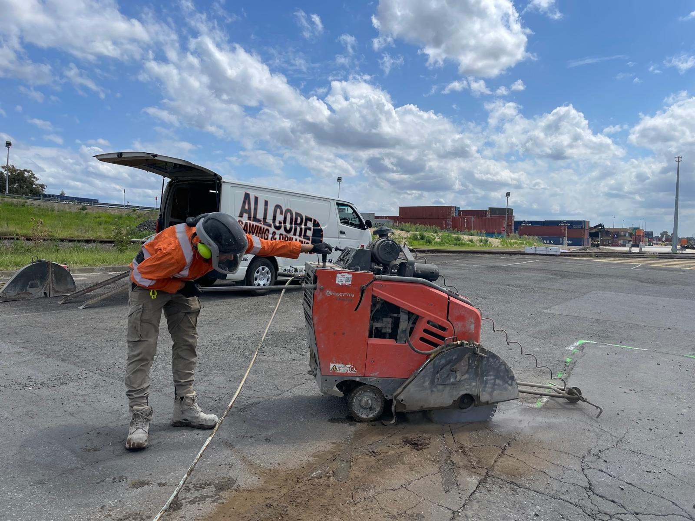
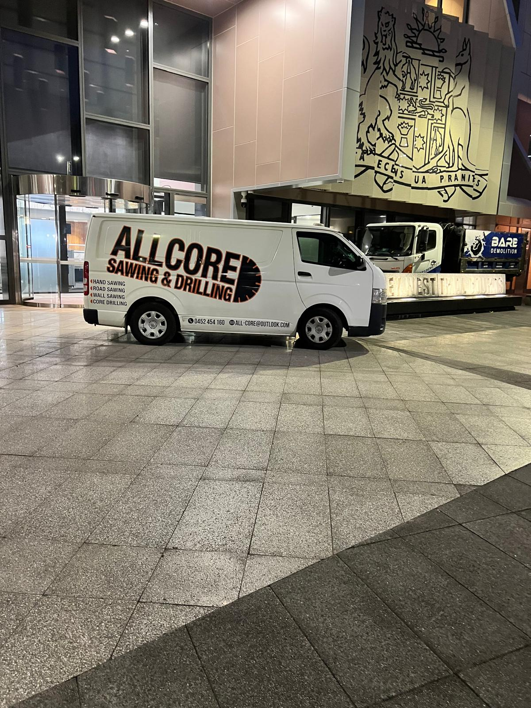
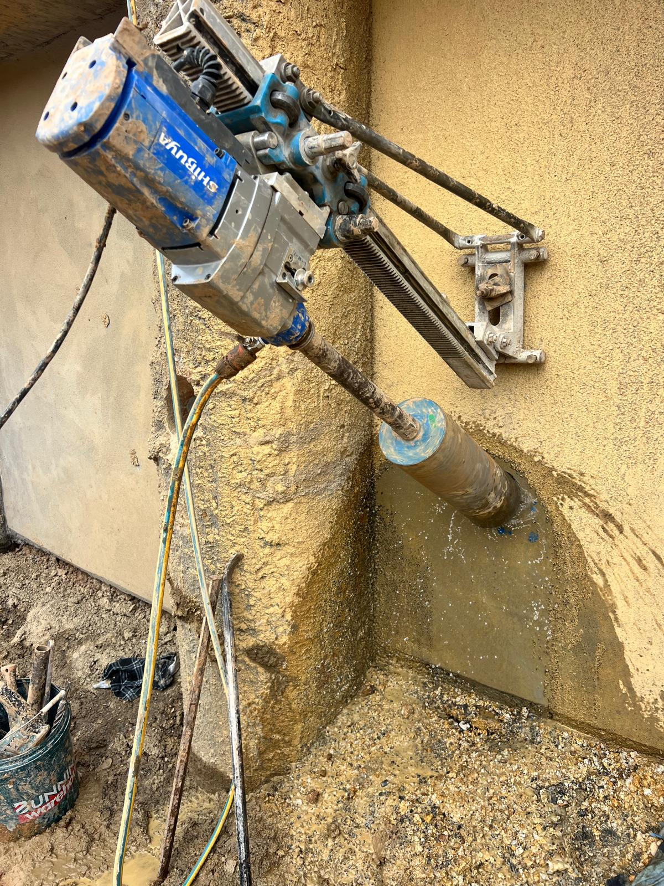
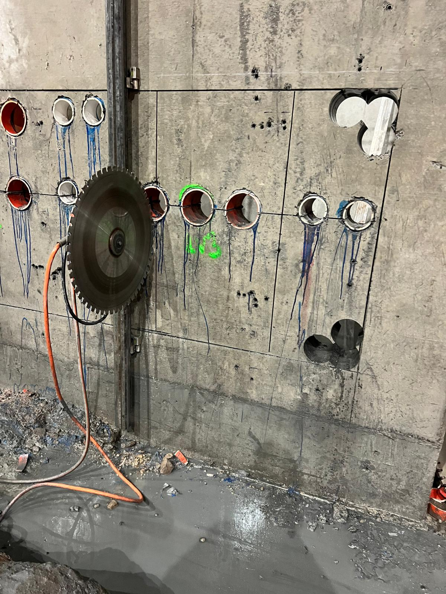
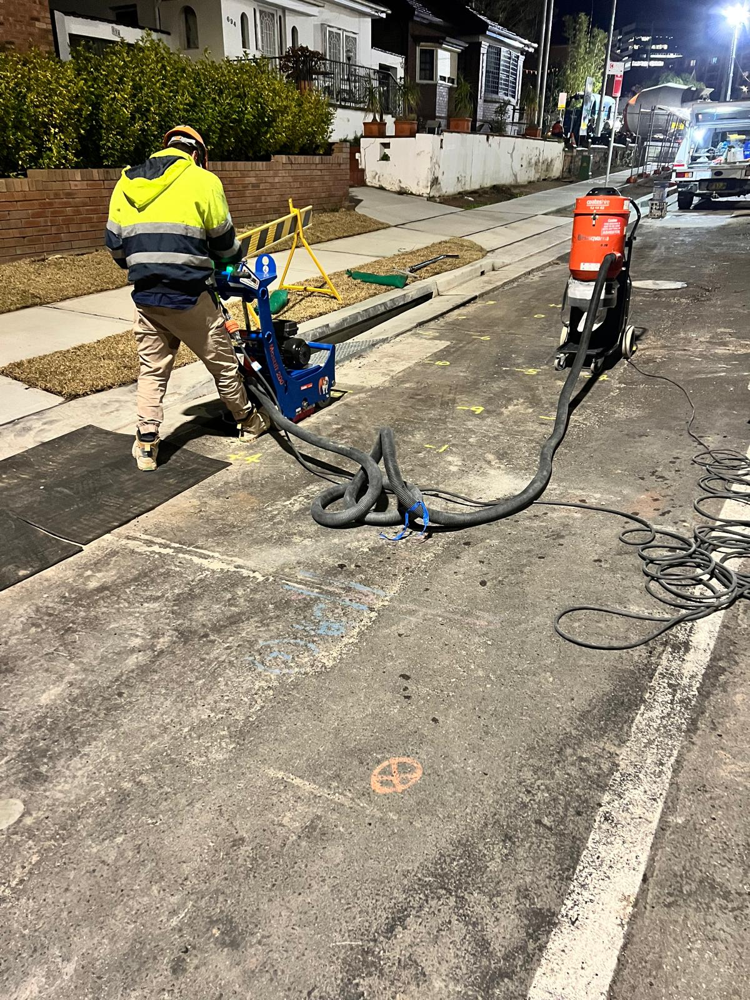

Road Sawing
Precision road cutting for infrastructure and civil projects using professional-grade equipment and clean, controlled methods.

Available 24/7
Delivering precision, safety, and efficiency to keep your projects on track and within budget. Right on time, every time.
About Us
At All Core Sawing and Drilling, we specialise in providing professional, reliable, and efficient concrete cutting and drilling services tailored to the needs of government infrastructure, building companies, and civil engineering firms.
With years of experience and cutting-edge equipment, we handle a wide range of projects, from small-scale jobs to large, complex infrastructure projects. Our commitment to safety means every job is carried out with strict adherence to safe work practices and clean execution on site.
What We Do

Precision road cutting for infrastructure and civil projects using professional-grade equipment and clean, controlled methods.

Accurate core drilling for plumbing, electrical, HVAC, and structural penetrations across concrete, masonry, and asphalt.

Clean, controlled wall cutting for openings, modifications, penetrations, and structural concrete work.

Versatile hand sawing for tight access areas, detailed cuts, and site conditions where flexible equipment is essential.
Process
Contact us to discuss your project's specific needs, requirements, access, and timeframes.
Our team provides a comprehensive quote and project timeline tailored to your scope.
We execute cutting and drilling with precision, minimising disruption and keeping safety front and centre.
Job completed on time, site left clean and ready for the next phase of the project.
Questions
We pride ourselves on fast turnaround times and work to fit within your program, including urgent and after-hours jobs where needed.
We support government infrastructure, commercial building, civil engineering works, and smaller precision cutting jobs.
Yes. Safety and compliance are a core part of how our team approaches every job on site.
We stand by our workmanship and focus on delivering clean, accurate results that support the long-term success of the project.
Reviews
“All Core Sawing and Drilling delivered on time and saved us from costly delays. Their precision and professionalism are unmatched.”
John M. Project Manager“We’ve never had such a smooth process. They not only met deadlines but helped us stay on budget. Highly recommended!”
Sarah K. Civil Engineer“Reliable, professional, and thorough. All Core is our go-to for concrete cutting support whenever timing really matters.”
David L. Building ContractorContact All Core Sawing & Drilling today for a free consultation.
Call 0452 454 160Get In Touch
Need professional sawing and drilling services? Contact All Core Sawing & Drilling today. We are available 24/7 to meet your needs.
ABN: 84 638 677 577